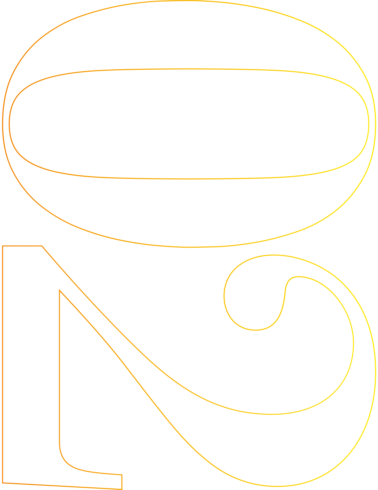
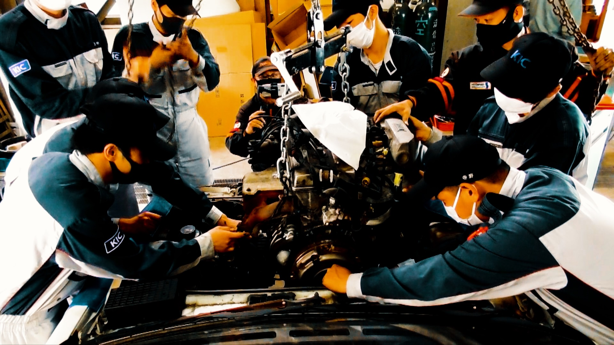
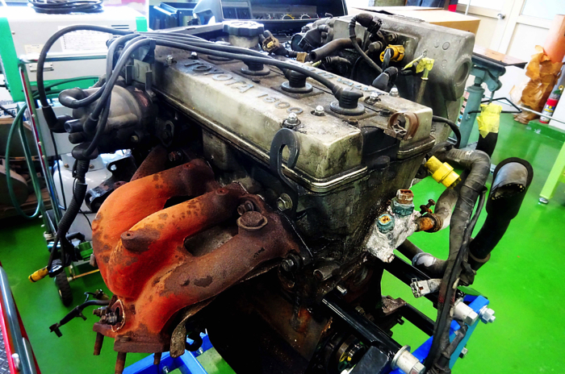
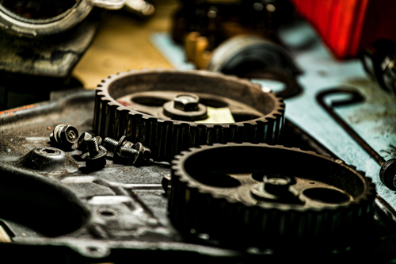
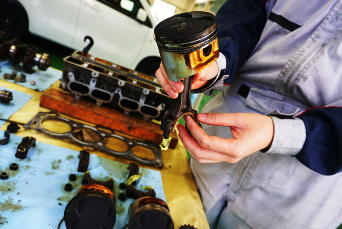
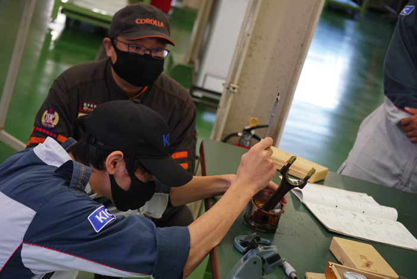
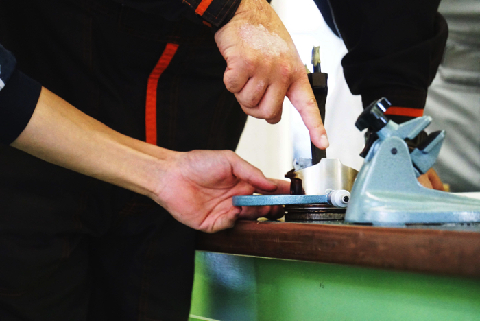

名機なくして名車なし
最後のFR（フロントエンジン）レビン／トレノとして注目された
AE86に搭載されてデビューしたTOYOTA 4A-GEUエンジン。
まず、カローラレビンの駆動系の分解を行っていきます。
AE86に搭載されてデビューしたTOYOTA 4A-GEUエンジン。
まず、カローラレビンの駆動系の分解を行っていきます。
ボンネットを外してエンジンクレーンでエンジンを釣り上げ
クルマから降ろしたら、動かないエンジンの原因を分解して調べます。
クルマから降ろしたら、動かないエンジンの原因を分解して調べます。





旧車やサーキット走行していたようなクルマは
金属疲労または経年劣化や腐りが起きています。
金属疲労または経年劣化や腐りが起きています。
わずかな車体の歪みなどを
すべて目視で確認することは不可能に近いことです。
すべて目視で確認することは不可能に近いことです。
あらゆる測定を含めた修復を行い、劣化値修正がされた
良好なバランスを維持した総合的な性能を確認します。
良好なバランスを維持した総合的な性能を確認します。
TOYOTA 4A-GEU
の声を聞け